Module 06: ApsaraDB for RDS
Agenda & Learning Objectives
- RDS Concept & Architecture
- Instance Configuration
- Storage & Backup
- High Availability & Disaster Recovery
- Scaling & Performance
- Security & Governance
- Migration
- PolarDB
- Pricing Model
Traditional Way vs. Alibaba Cloud RDS
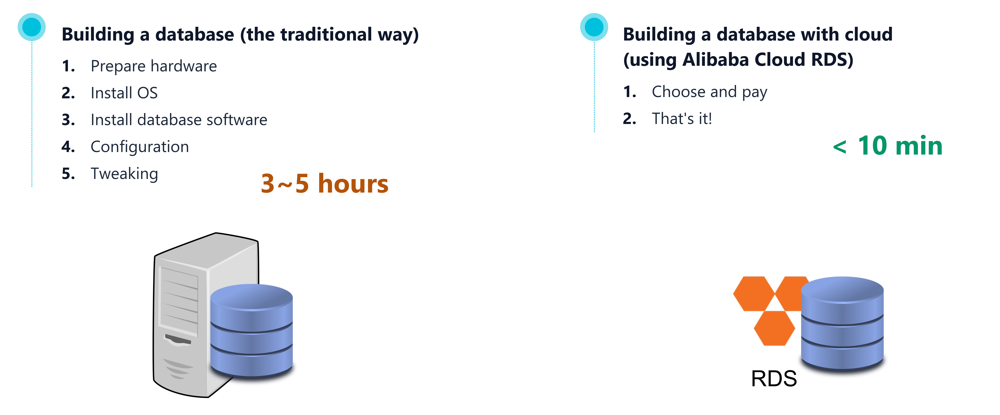
ApsaraDB for RDS
ApsaraDB for RDS is a fully managed relational database service that provides automated provisioning, high availability, backup, and elastic scaling.
Compared to traditional on-premises database deployments or self-managed databases on virtual machines that introduce complex high-availability setups, manual operating system patching, and tedious disaster recovery management, RDS automates operational overhead, guaranteeing up to 99.99% availability so organizations can focus on application data logic.
⚡ High Availability
Multi-AZ active-standby replication with automated failover in under 30 seconds.
🔒 Multi-Tier Security
Integrated IP whitelisting, SSL/TLS in-transit encryption, and TDE storage encryption.
🔄 Automated Backup & PITR
Continuous binlog archiving enabling second-level Point-in-Time Recovery.
📈 Elastic Read Scaling
Attach up to 10 Read-Only replicas with transparent Read/Write splitting proxy.
🛠️ Comprehensive Management
Automated patching, parameter tuning, performance diagnostics, and DMS governance.
Supported Relational Database Engines
ApsaraDB RDS for MySQL
- Engine Versions: Full compatibility with official MySQL 5.6, 5.7, and 8.0 releases.
- Core Capabilities: ACID-compliant InnoDB transactions, automated crash recovery, and multi-tenant security isolation.
- Target Use Cases: Web applications, e-commerce transaction processing, and cloud-native microservices.
ApsaraDB RDS for PostgreSQL
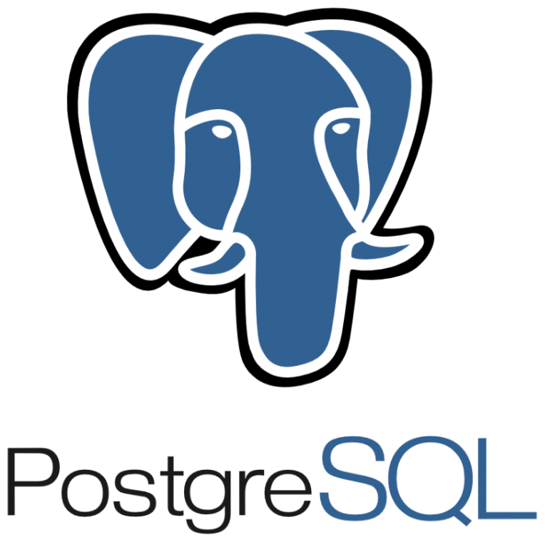
- Engine Versions: Comprehensive support for PostgreSQL major versions 10 through 16.
- Core Capabilities: Rich SQL standard compliance, advanced indexing (B-Tree, Hash, GIN, GiST), and JSONB semi-structured data.
- Target Use Cases: Enterprise relational databases, complex analytics, geographic information systems, and ERPs.
ApsaraDB RDS for SQL Server
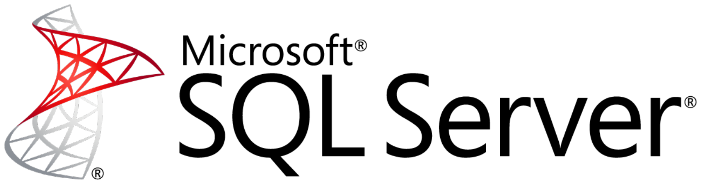
- Engine Versions: Microsoft SQL Server 2008 R2, 2012, 2016, 2017, 2019, and 2022.
- Enterprise Features: Microsoft AlwaysOn availability groups, Linked Servers, and SSAS / SSIS / SSRS.
- Target Use Cases: Legacy Windows enterprise applications, financial cores, and enterprise reporting.
ApsaraDB RDS for MariaDB
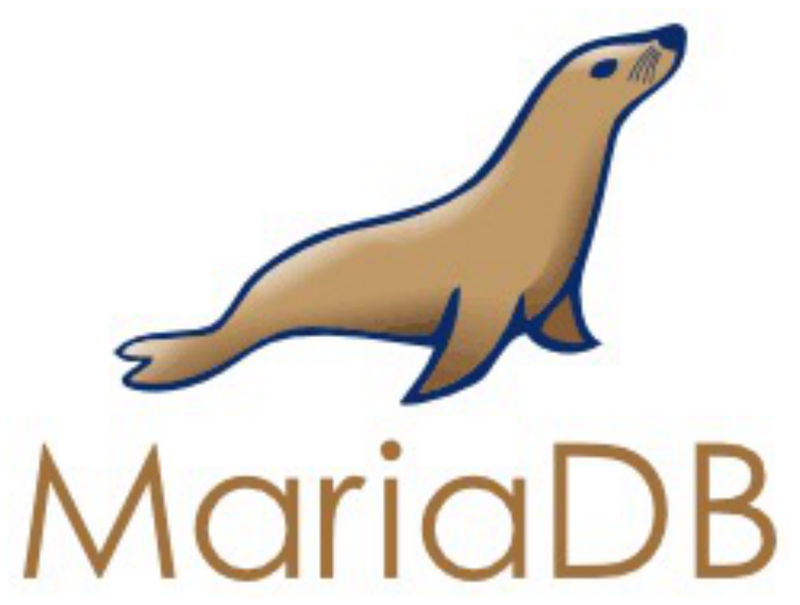
- Engine Versions: MariaDB TX community and enterprise branch versions.
- Features: Thread pool connection scaling, Aria storage engine, and high transactional concurrency.
- Target Use Cases: Open-source community systems and high-throughput transactional apps.
Supported Relational Database Engines (cont.)
AliSQL (MySQL Kernel Enhancement)
- Enterprise Branch: Proprietary MySQL kernel developed by Alibaba Cloud, proven and battle-tested during the Double 11 Global Shopping Festival under massive transaction bursts.
- High-Concurrency Thread Pool: Replaces the traditional one-thread-per-connection architecture with an intelligent worker thread pool, sustaining tens of thousands of active connections without memory thrashing.
- Statement Concurrency Control (CCL): Built-in SQL queue management that dynamically throttles high-frequency queries matching specific syntax rules to protect the instance from CPU overload.
- Performance & DDL Optimizations: Non-blocking fast DDL execution, optimized InnoDB buffer pool flushing, hot-spot inventory update hints (Commit-on-Success), and multi-threaded slave replication.
AliPG (PostgreSQL Kernel Enhancement)
- Enterprise PostgreSQL Engine: 100% compatible with open-source PostgreSQL while integrating enterprise-grade security, geospatial analytics, and native AI vector indexing.
- Ganos Spatio-Temporal Engine: Native spatial computing engine supporting spatial geometries, mobile trajectory tracking, 3D surface meshes, LiDAR point clouds, and remote sensing imagery.
- Native AI Vector Search: Built-in high-dimensional vector search algorithms (pgvector and PASE indexing) enabling real-time embedding similarity queries for RAG and GenAI applications.
- Scalability & Enterprise Governance: Parallel query execution optimizations, partitioned table routing acceleration, Transparent Data Encryption (TDE), and optimized background MVCC autovacuuming.
IaaS vs. PaaS Responsibility Model
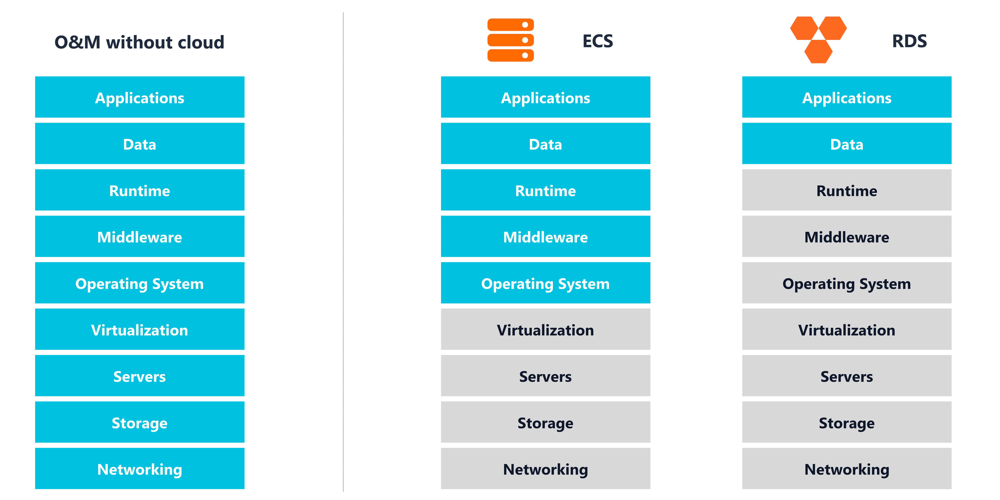
IaaS vs. PaaS Database
Self-Managed Database on ECS (IaaS)
- Full OS & Host Control: Root access to host operating system; ability to install custom kernel modules and custom database binaries.
- High Operational Burden: Customer is responsible for hardware provisioning, OS security patches, database software installation, and replication topology setup.
- Manual High Availability: Requires building custom cluster orchestration (e.g., MHA, Keepalived, or Pacemaker) with manual failover scripts.
- Backup Complexity: Manual creation of cron scripts for logical dumps and physical backup storage management.
ApsaraDB for RDS Managed Platform (PaaS)
- Turnkey Provisioning: Deploy enterprise-grade production database clusters in under 10 minutes via console or Terraform.
- Automated Lifecycle Operations: Automatic OS patching, minor version upgrades, and hardware replacement with zero administrative tax.
- Built-in HA & Health Monitoring: Automated dual-node or triple-node active-standby failover with sub-30-second RTO.
- Comprehensive Ecosystem: Seamless integration with Data Management Service (DMS), CloudMonitor, and Database Autonomy Service (DAS).
Basic, HA & Enterprise Editions
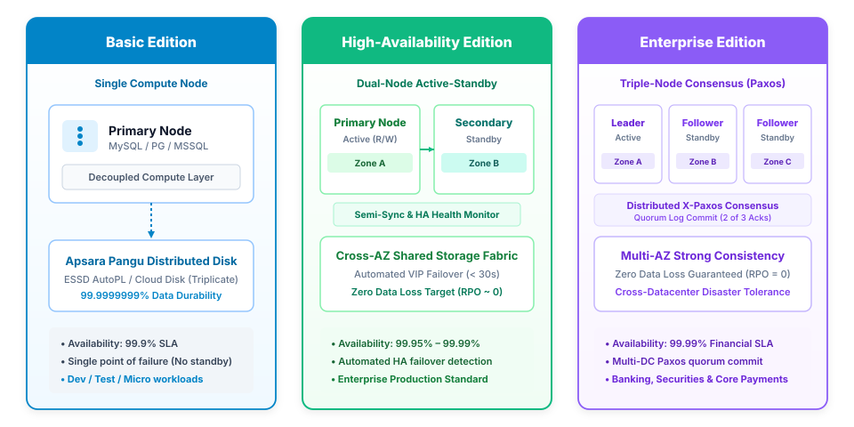
Shared Instances
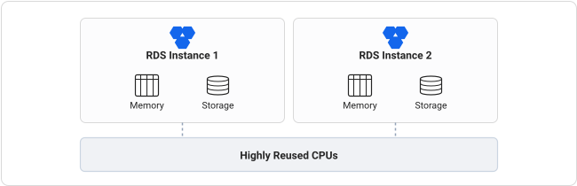
Architecture & Tenancy Model Reused Resources
- Multi-Tenant Resource Sharing: Physical host CPUs, memory channels, and local/cloud storage connections are dynamically shared across multiple customer instances.
- Dynamic Oversubscription: Enables maximum physical host utilization, translating directly into the lowest cost per database instance.
- Elastic Bursting: Instances can burst beyond baseline allocations during idle host periods to handle transient query spikes.
Performance Profile & Best Fit Entry-Level / Dev
- Noisy-Neighbor Exposure: Heavy concurrent queries or memory spikes on adjacent tenant instances may induce transient CPU scheduling or I/O jitter.
- Ideal Workloads: Development and staging environments, internal proof-of-concept (PoC) apps, low-traffic departmental portals, and non-critical batch jobs.
- Representative Series:
rds.mysql.s1.small,mysql.n2.small.1,pg.n2.small.1.
General-Purpose Instances
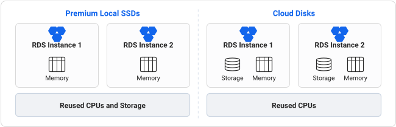
Reused CPUs with Decoupled Storage Balanced Tenancy
- Reused Compute Capacity: Physical CPU cores are dynamically multiplexed to balance overall host utilization and optimize licensing economics.
- Guaranteed Memory Allocation: Dedicated memory boundaries protect each instance against out-of-memory (OOM) eviction from neighboring workloads.
- Dedicated Cloud Disks (Local SSD vs. ESSD): Storage layer is provisioned on dedicated block volumes (ESSD PL0–PL3) with independent bandwidth.
Workload Alignment & Characteristics Production Baseline
- Balanced Cost-Performance: Delivers predictable throughput and stable I/O performance suitable for standard enterprise transactional workloads.
- Controlled Contention: Hypervisor QoS schedulers enforce minimum compute floors, preventing runaway neighbor degradation.
- Recommended Workloads: Mid-tier web applications, corporate ERP/CRM databases, microservice data stores, and moderate OLTP systems.
- Representative Series:
mysql.n4.large.1(1:4),mysql.n2.large.1(1:2),pg.n4.large.1.
Dedicated Instances
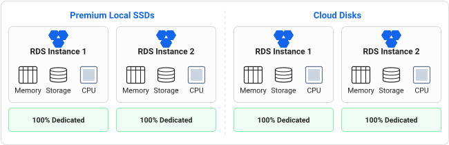
100% Dedicated Physical Resources Full Isolation
- Dedicated Physical Cores: 1:1 hardware core mapping with zero CPU thread oversubscription; no resource sharing with any other tenant.
- Isolated Memory Channels: Exclusive memory bus bandwidth guarantees zero cache thrashing or NUMA memory contention.
- Dedicated I/O Pathways: Dedicated host NIC queue pairs and storage bus channels sustain full line-rate IOPS and network throughput.
Zero Jitter & Mission-Critical SLAs Tier-1 Production
- Complete Noise Immunity: Eliminates noisy-neighbor syndrome entirely, providing deterministic microsecond transactional latency curves.
- Highest SLA Commitment: Backed by Alibaba Cloud's highest financial SLA (99.995% multi-AZ) for mission-critical relational databases.
- Target Workloads: High-volume OLTP core banking systems, e-commerce checkout spikes, payment gateways, and real-time ledger engines.
- Representative Series:
mysql.x4.large.2c,mysql.x8.2xlarge.2c,rds.mysql.t1.large,pg.x8.large.2c.
Dedicated Hosts
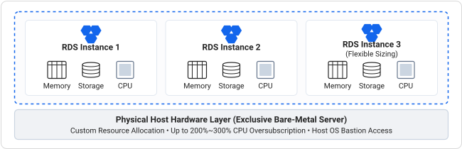
Single-Tenant Bare-Metal Host Fleet Host Ownership
- Exclusive Physical Server: An entire physical server (or host group) is dedicated exclusively to your organization via ApsaraDB for MyBase.
- Flexible Instance Provisioning: Freely allocate, resize, and pack multiple database instances (MySQL, PostgreSQL, Redis) across the physical host.
- Custom Oversubscription Control: Full administrative control to configure CPU oversubscription ratios (up to 200%~300%) to maximize licensing efficiency.
Host-Level Governance & Compliance ApsaraDB for MyBase
- Host OS Bastion Access: Gain direct SSH bastion access to the underlying host OS to install custom monitoring agents, auditing daemons, or backup tools.
- Regulatory & Compliance Isolation: Satisfies strict regulatory requirements (PCI-DSS, sovereign financial audits) mandating dedicated physical server tenancy.
- Target Scenarios: Enterprise on-prem database farm migrations, large-scale multi-database consolidation, and license-intensive database estates.
- Offering Architecture: Managed physical host groups with automated maintenance, disaster recovery failover, and self-service provisioning.
RDS Instance Type Families
General / Standard Family (1:4) Balanced Ratio
- Hardware Dimension: 1 vCPU to 4 GB RAM balanced allocation matching standard relational query execution.
- Alibaba RDS Codes:
mysql.n4.large.1(Basic),mysql.x4.large.2c(Dedicated HA),pg.x4.large.2c. - Target Workloads: Web application backends, corporate CRM/CMS portals, and moderate-throughput transactional systems.
Compute-Optimized Family (1:2) High Compute
- Hardware Dimension: 1 vCPU to 2 GB RAM high compute density allocation for CPU-bound database operations.
- Alibaba RDS Codes:
mysql.n2.medium.1,rds.mysql.c1.large(Dedicated),pg.n2.2c.1m. - Target Workloads: Analytical batch calculation jobs, real-time log ingestion filtering, and CPU-intensive API microservices.
Memory-Optimized Family (1:8) High RAM
- Hardware Dimension: 1 vCPU to 8 GB RAM high-capacity memory allocation to maximize database buffer pools.
- Alibaba RDS Codes:
mysql.n8.large.1(General-Purpose),mysql.x8.large.2c(Dedicated HA),pg.x8.large.2c. - Target Workloads: High-concurrency OLTP engines, e-commerce checkout spikes, and large in-memory working sets.
High-IOPS & Dedicated Local SSD Ultra Low Latency
- Hardware Dimension: 100% dedicated host cores with local NVMe SSD storage attached directly to the physical server bus.
- Alibaba RDS Codes:
rds.mysql.t1.large,mysql.i8.2xlarge.25,mysql.x8.4xlarge.2c. - Target Workloads: Core financial trading matching engines, banking transaction ledgers, and ultra-high-throughput systems.
YiTian ARM-Based Instances

- Cores & Clock: 128 custom Armv9 physical cores @ 2.75 GHz (turbo up to 3.2 GHz; ~60B transistors).
- Cache Hierarchy: 128 MB system-level L3 cache + private L2 cache per core.
- Memory Channels: 8-channel DDR5-4800 (up to 4 TB RAM, ~307 GB/s bandwidth).
- Interconnect & I/O: 96 PCIe Gen 5.0 lanes; dual-socket coherent interconnect.
- Hardware Acceleration: On-chip gzip data compression & AES/SM4 hardware crypto engines.
- Integer Benchmark: SPEC CPU 2017 Integer rate > 440.
Key Architectural Strengths
- 20%~30% Price-Performance: Delivers superior throughput-per-dollar compared to legacy x86 CPUs for database transactional workloads.
- Dedicated Physical Cores: Pure single-threaded physical core execution without SMT (hyper-threading), eliminating noisy neighbors and CPU cache jitter.
- Hardware-Offloaded Compression: On-chip acceleration for gzip data compression and cryptographic hashing (AES/SM4), saving CPU cycles.
Use Cases
- High-Concurrency Web & Mobile APIs: Sustained low-latency query handling under heavy multi-threaded connection pools.
- OLTP E-Commerce & Core Systems: Highly efficient execution of complex joins, inventory updates, and cart checkouts at lower power draw.
- Engine Compatibility: Native binary optimization for ApsaraDB RDS for MySQL (8.0/5.7) and PostgreSQL (14/15) in Jakarta and Singapore.
RDS Storage Types Comparison
| Storage Type | Performance & Latency | Max Capacity | Key Features & Best Fit |
|---|---|---|---|
| Enhanced SSD (ESSD) |
PL0–PL3 performance levels; Up to 1,000,000 IOPS, sub-200 µs microsecond latency. |
Up to 32 TB (Online zero-downtime scaling) |
Default enterprise choice: Fully decoupled compute/storage architecture with 9-nines durability (99.9999999%). Supports MySQL, PostgreSQL, SQL Server, and MariaDB. |
| Premium ESSD | Baseline provisioned IOPS + I/O Performance Bursting to absorb unexpected query surges. |
Up to 32 TB (+ OSS cold archive tiering) |
Spiky & growing datasets: Buffer Pool Extension (BPE) for fast caching; auto-archives cold historical tables to OSS for up to 80% storage cost reduction. |
| Premium Local SSD |
Up to 150,000 IOPS, 10–50 µs microsecond access latency. |
Up to 24 TB (Fixed physical NVMe bus) |
Core OLTP & Trading: Direct PCIe motherboard attachment eliminating network hops; 10× faster local backup/restore via Percona XtraBackup. Available on RDS for MySQL HA. |
| Standard SSD (EOL) |
Up to 20,000 IOPS, millisecond latency. |
Up to 2 TB (Legacy block limits) |
Legacy support only: First-generation distributed disk (End-of-Sale since July 2022). Not recommended for new deployments; migration to ESSD strongly recommended. |
RDS Backup Mechanisms
Physical & Storage Snapshot (Default) Raw Block Level
- Raw Block Capture: Copies database data files, tablespaces, and transaction logs directly at the underlying storage block level.
- ESSD Cloud Disks: Uses Alibaba Cloud Pangu redirect-on-write snapshots, creating instantaneous baseline images in seconds with zero compute locking.
- Premium Local SSDs: Leverages Percona XtraBackup non-blocking physical file copy executed directly over the high-speed local PCIe bus.
- Instance-Level Recovery: Restores the entire database engine image to a consistent baseline; delivers the fastest recovery duration for multi-terabyte databases (> 1 TB).
- PITR Mandatory Baseline: Serves as the required base state for continuous Point-in-Time Recovery log replays.
Logical Backup (SQL Object Export) SQL-Based / Portable
- SQL Text Generation: Queries the database engine to export schema definitions (DDL) and row data (DML) into human-readable text SQL statements (
mysqldump). - Granular Object-Level Recovery: Supports restoring individual tables or specific databases without rolling back or affecting the entire instance.
- Cross-Platform Portability: Ideal for cross-major-version database upgrades, migrations between cloud providers, or restoring to on-premises environments.
- Compute & Size Tradeoffs: Consumes higher CPU/memory and has longer restore times; best suited for development, staging, or datasets (≤ 1 TB).
- Ad-Hoc Execution: Can be scheduled automatically or triggered on-demand via Alibaba Cloud Data Management Service (DMS).
Automated Backup Scheduling
- Backup Cycle: Automated full backups execute on scheduled days (e.g., Mon, Wed, Fri, Sun; mandatory minimum 2 days/week).
- Preferred Maintenance Window: 1-hour configurable off-peak window (e.g.,
17:00–18:00) to eliminate production I/O impact. - Continuous Log Backup: Transaction logs (Binlog) automatically compressed and shipped to OSS every 5–30 minutes for PITR.
- Retention Period: Policy-based retention configurable from 7 days up to 730 days (2 years) for compliance audits.
- Disk Full Auto-Purge: Automatically purges uploaded local binlogs when disk utilization exceeds 80% to prevent instance lockups.
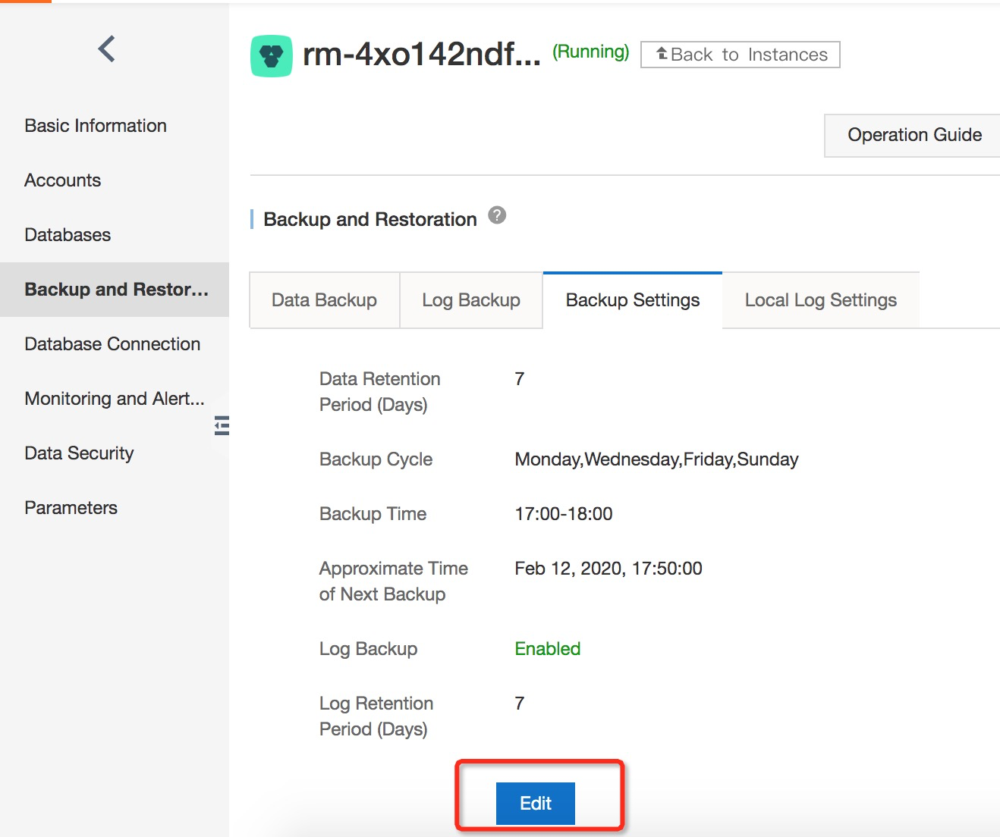
Storage, Backup & Point-in-Time Recovery (PITR)
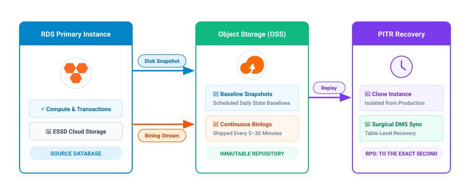
Point-in-Time Recovery (PITR) Execution Workflow
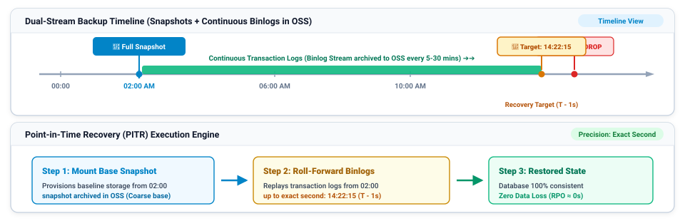
Snapshot + Binlog Synergy Foundation
Scheduled physical snapshots establish coarse baseline state in OSS; continuous transaction logs capture sub-minute transactional deltas.
T - 1s Pinpointing (DAS / Audit) Exact Target
Using SQL Audit or DAS, identify the exact second of the destructive query (e.g. 14:22:16) and set the recovery point to 14:22:15.
Automated Engine Replay RPO ≈ 0s
Alibaba Cloud mounts the base snapshot and sequentially fast-forwards binlogs, stopping right before the error with zero data loss.
RDS Database Restoration Methods
Native RDS Console Native
- Scope: Complete instance-level database restoration.
- Restore to New Instance (Recommended): Clones snapshot/PITR data into an isolated new instance with zero production risk.
- In-Place Overwrite: Direct data overwrite on running instance; requires downtime window, preserves IP endpoints.
- Automation: Cloud platform automatically mounts storage and replays binlogs in the background.
Surgical Object Restore DMS
- Scope: Corrupted individual tables or deleted rows via Data Management Service (DMS).
- Binlog Data Tracking: DMS tracks row-level mutations and generates inverse compensating SQL (undo
DELETE/UPDATE). - Cross-Instance Table Sync: Surgically copies restored tables from clone instance directly back into production.
- Production Continuity: Eliminates instance-level rollbacks; production stays online with minimal RTO.
Local / On-Premises Open-Source
- Scope: Offline recovery to local servers or dev labs via Percona XtraBackup or mysqldump.
- Physical Backups: Download raw packages from OSS; restore InnoDB tablespaces via
xtrabackup --prepare. - Logical Backups: Download text SQL dumps; import using standard
mysql -u root < dump.sql. - Use Case: Ideal for air-gapped staging, local test hydration, and offline regulatory compliance audits.
Active-Standby Failover
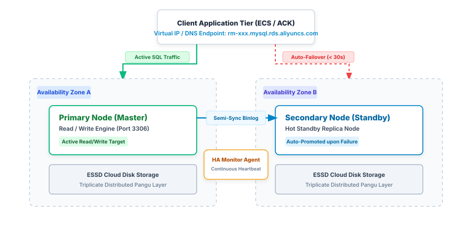
Replication Synchronization
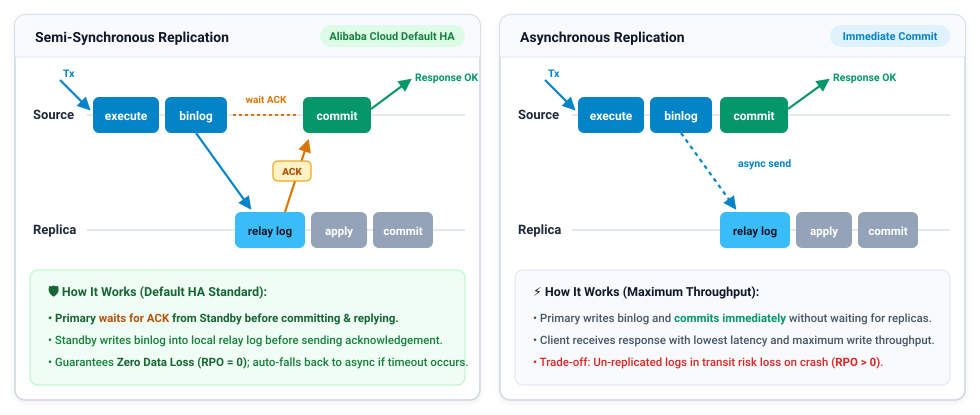
Single-Zone vs. Multi-Zone Deployment
The Single-Zone Danger
Local redundancy is powerless against facility-level catastrophes (fires, grid blackouts, fiber cuts). Hosting both primary and standby databases in the same physical datacenter creates a fatal single point of failure.
Multi-Zone Physical Isolation (Zone A + Zone B)
- Independent Facilities: Primary and Standby reside in separate physical datacenters with isolated power grids, cooling, and flood barriers.
- Dark Fiber Low-Latency Sync: Interconnected via redundant optical dark fiber (< 1.5 ms latency) across the metropolitan region.
Automated Sub-30s Failover
- Instant Promotion: HA daemons detect zone loss in seconds (3 missed heartbeats) and auto-promote Zone B standby to primary.
- Seamless VIP Migration: Endpoint Virtual IP moves instantly to Zone B; applications reconnect automatically with zero DNS wait or IP changes.
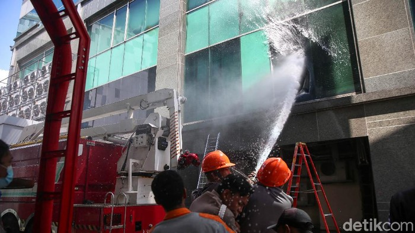
Cross-Region Disaster Recovery
Native RDS Cross-Region Features
- Native DR Replicas (RDS Console): 1-click provisioning directly from the RDS console; replicates asynchronously over Alibaba Cloud private CEN backbone without internet exposure.
- Native Cross-Region Backup (OSS): Automated policy-based snapshot and binlog replication directly to remote region OSS buckets for cost-effective offline recovery.
- Native 1-Click Master Promotion: Instantly promote the remote DR replica into a standalone read/write primary if the primary region suffers a total outage.
- Local Read Offloading: The remote DR instance serves local reporting and read queries in the secondary region without impacting the primary node.
DTS Cross-Region Synchronization
- Real-Time Continuous Sync: Leverages DTS incremental CDC pipeline for continuous, sub-second data streaming between active database instances.
- Active-Active & Multi-Master: DTS supports bi-directional two-way synchronization across regions with built-in conflict resolution mechanisms.
- Granular Object-Level Filtering: Selectively replicates specific databases, tables, or row-level filters rather than entire database instances.
- Reversible Flow & Failback: When the primary region recovers, DTS allows reversing the synchronization direction to sync changes back without full rebuild.
Read/Write Splitting
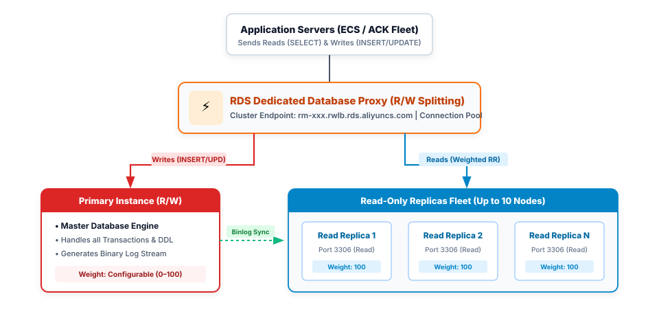
Dedicated Database Proxy: Enterprise Features
Transparent Query Routing Engine
- Unified Cluster Endpoint: Applications connect to a single endpoint (
*.rwlb.rds.aliyuncs.com); proxy parses SQL verbs in-flight. - Automatic Write Forwarding: All DDL operations, transactions, and DML write statements (
INSERT,UPDATE,DELETE) route strictly to the Primary. - Read Load Balancing: Distributes
SELECTqueries across the primary and read-only replicas using configurable Weighted Round Robin. - Zero Application Code Refactoring: Eliminates complex multi-datasource configuration in application application code frameworks.
Connection Pooling & Overload Shield
- Transaction Tracking: Automatically routes read queries within an open transaction to the primary instance to guarantee read-your-own-writes consistency.
- Multiplexed Connection Pooling: Consolidates tens of thousands of client connections into an optimized pool of backend database connections.
- Surge & Overload Protection: Buffers connection spikes and queues requests during peak traffic rushes, preventing database thread exhaustion crashes.
- Read-Only Failover Isolation: If a read replica fails, the proxy immediately diverts queries to remaining healthy replicas with zero client error.
Read-Only Replicas Fleet Management
Elastic Horizontal Scaling
- Up to 10 Read Replicas: Attach up to 10 read-only replica instances to a single RDS MySQL/PostgreSQL primary instance.
- Independent Hardware Sizing: Read replicas can be provisioned with different CPU/memory specifications than the primary node.
- Independent Connection Endpoints: Each read replica provides its own private endpoint for dedicated reporting tools alongside the shared proxy.
- Zero Impact Provisioning: Created from primary snapshot backups without locking tables or degrading primary transactional throughput.
Dynamic Traffic Weighting
- Weighted Round Robin: Assign integer weights (0–100) per instance; higher-spec replicas receive proportionally more queries.
- Zero-Weight Maintenance: Set a replica's weight to 0 to safely drain read traffic for performance benchmarking or configuration tuning.
- Primary Read Allocation: Configure whether the primary node participates in serving read queries or is dedicated 100% to write transactions.
- Real-Time Weight Tuning: Modify weights dynamically via console or API with zero connection reset.
Replication Lag Protection
- Automated Lag Thresholding: Define a maximum replication delay threshold (default 30 seconds).
- Auto-Removal from Pool: When a read replica experiences replication lag exceeding the threshold, the proxy excludes it from routing.
- Automatic Re-admission: Once the replica catches up with primary binlog events, it is seamlessly reintegrated into the active read pool.
- Stale Data Prevention: Guarantees that client read requests are never routed to severely delayed replica instances.
Replication Parallelism & Read Consistency Levels
Multi-Threaded Slave Applier (MTS)
- Parallel Relay Log Execution: Bypasses legacy single-threaded replication bottlenecks using logical clock and writeset dependency tracking.
- Group Commit Parallelism: Transactions committed concurrently in the same binlog group commit on the primary are replayed concurrently on replicas.
- Writeset Dependency Tracking: Evaluates row-level primary key hashes; independent transactions execute in parallel across worker threads.
- Eliminates Replication Lag: Maintains near-zero replication latency even during massive batch data import operations.
Read Consistency Configurations
- Eventual Consistency Mode: Read queries routed to replicas reflect the current replica state; optimal for standard web browsing and reporting.
- Session-Level Consistency: Enforces that a client session reads data that is at least as fresh as the client's latest committed write.
- Global Read Consistency: The proxy checks the primary GTID against replica executed GTID sets before executing reads, routing to primary if delayed.
- Architectural Balance: Allows architects to fine-tune the tradeoff between peak distributed throughput and strict transactional freshness.
Multi-Tier Database Security Defense Mesh
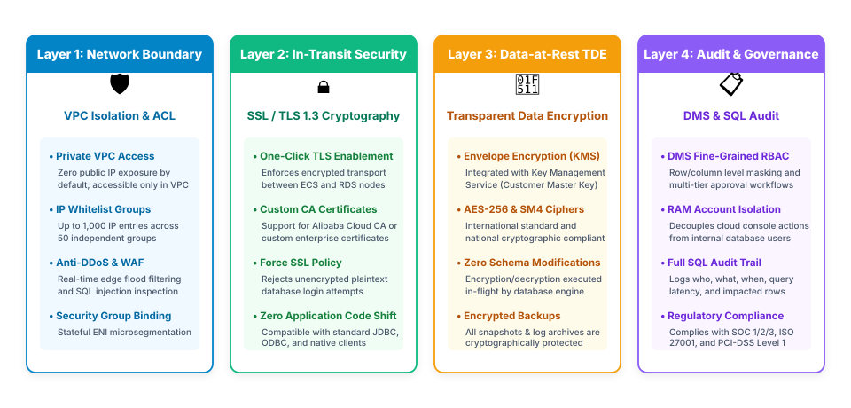
Network Perimeter Isolation & IP Whitelist Rules
VPC Network Layer Isolation
- Zero Public IP Exposure: RDS instances are provisioned within a private VPC subnet without public IP addresses by default.
- VPC ENI Architecture: Connects to private vSwitch interfaces, ensuring all database traffic remains strictly on Alibaba Cloud internal SDN fabrics.
- Security Group Binding: Associate VPC Security Groups directly with RDS elastic network interfaces for unified firewall policy enforcement.
- Cross-VPC Private Transit: Connect across VPCs or hybrid data centers via Cloud Enterprise Network (CEN) without traversing the public internet.
Granular IP Whitelist Engine
- Built-in Mandatory Whitelist: All inbound connection attempts are rejected by default unless the client IP is explicitly whitelisted.
- Up to 1,000 Whitelist IP Entries: Define individual client IP addresses or CIDR blocks (e.g.,
10.0.1.0/24). - Multi-Group Categorization: Organize whitelists into up to 50 independent groups (e.g.,
app_web_fleet,bastion_mgmt,analytics_etl). - Shared Whitelist Templates: Create enterprise-wide IP whitelist templates and apply them across multiple RDS instances simultaneously.
In-Transit Encryption: SSL / TLS 1.3 Acceleration
Transport Layer Cryptography
- End-to-End Packet Encryption: Encrypts all client-to-database communication channels, preventing eavesdropping and packet sniffing.
- Modern TLS 1.2 & TLS 1.3: Supports modern cryptographic cipher suites with forward secrecy and hardware-accelerated handshake negotiation.
- One-Click Activation: Enable SSL/TLS encryption directly in the RDS console with automated server certificate generation.
- Zero Application Code Modifications: Fully compatible with standard client database drivers (MySQL Connector/J, psycopg2, SQL Server JDBC).
Certificate Management & Policy Enforcement
- Custom CA Integration: Upload enterprise intermediate or custom root CA certificates to verify database server identities.
- Mandatory SSL Enforcement (Force SSL): Enforce strict database policies that automatically reject unencrypted plaintext connection attempts.
- MitM Attack Prevention: Clients verify the server certificate common name and cryptographic signature before transmitting database credentials.
- Automated Renewal: Native integration with Alibaba Cloud Certificate Management Service ensures seamless automated certificate renewal.
Data-at-Rest Encryption: Transparent Data Encryption (TDE)
Transparent Data Encryption (TDE) Mechanics
- Engine-Level Block Encryption: Real-time in-flight encryption of database files before writing to disk, and decryption upon reading into memory.
- Zero Schema Alterations: Transparent to business applications; requires zero table alterations, SQL changes, or ORM adjustments.
- Cryptographic Standards: Supports industry-standard AES-256 and national cryptographic SM4 encryption algorithms.
- Comprehensive Coverage: Automatically encrypts database tablespace files, redo logs, undo logs, snapshot backups, and binlog archives.
Envelope Encryption with KMS
- Key Management Service (KMS) Integration: Cryptographic keys are managed via Alibaba Cloud KMS with Customer Master Keys (CMKs).
- Two-Tier Key Hierarchy:
- Customer Master Key (CMK): Securely stored inside hardware security modules (HSM); rotated automatically on a regular schedule.
- Data Encryption Key (DEK): Encrypts actual database tablespaces; protected and wrapped by the CMK.
- Zero Cloud Admin Access: Even Alibaba Cloud administrators cannot decrypt customer data without explicit KMS authorization.
- Regulatory Compliance: Fulfills strict banking, financial, and healthcare data residency and at-rest security mandates.
Enterprise Governance: RAM & Data Management Service (DMS)
Resource Access Management (RAM) RBAC
- Console & API Control: Governs which cloud IAM users can create, modify, reboot, or delete RDS database instances.
- Decoupled Credential Model: RAM permissions manage infrastructure operations; internal database SQL accounts handle data queries.
- Attribute-Based Access Control (ABAC): Restrict administrative actions using resource tags (e.g.,
Environment: Production). - ActionTrail Audit: Every API call and configuration adjustment is permanently logged in ActionTrail for compliance audits.
DMS Unified Data Governance
- Granular Data Masking: Automatically masks sensitive columns (e.g., credit card numbers, phone numbers, PII) in query results.
- Multi-Level Approval Workflows: Production DDL schema changes and data export requests require mandatory management approval tickets.
- Row & Column Permission Scopes: Grant developers temporary SELECT permissions restricted to specific tables or non-sensitive columns.
- Full SQL Traceability: Records every executed query, export ticket, and data manipulation action with forensic provenance.
Operational Intelligence: SQL Audit & Database Autonomy (DAS)
Full SQL Audit Trail
- Comprehensive Query Logging: Logs every executed SQL statement with client source IP, execution duration, and affected row counts.
- Simple Log Service (SLS) Stream: Streams audit logs to SLS for sub-second SQL search and forensic security investigations.
- Compliance Certification: Satisfies strict regulatory requirements including SOC 1/2/3, ISO 27001, and PCI-DSS Level 1.
- Intrusion Detection: Automatically flags suspicious bulk queries and unauthorized access attempts.
CloudMonitor Telemetry
- 50+ Performance Metrics: Tracks CPU utilization, memory consumption, IOPS, connection counts, and disk space in real-time.
- Automated Alarm Policies: Trigger webhook, SMS, and DingTalk alerts on high CPU usage, connection exhaustion, or replication lag.
- Unified Operations Dashboard: Visualizes fleet-wide database performance across regions from a single management console.
- Customizable Granularity: High-precision 1-second metric collection for high-frequency trading and critical systems.
Database Autonomy Service (DAS)
- AI-Driven Optimization: Continuously analyzes execution plans and automatically generates missing index recommendations.
- Automated Slow SQL Throttling: Identifies and rate-limits abnormal runaway queries before they saturate database CPU cores.
- Autonomous Storage Expansion: Automatically triggers disk capacity expansion when free storage drops below critical safety margins.
- Health Diagnosis Reports: Daily automated health check reports identifying sub-optimal database parameter configurations.
Data Transmission Service (DTS)
Data Transmission Service (DTS) is a fully managed data integration and migration service that supports data migration, continuous synchronization, and real-time data subscription.
DTS eliminates complex database migration challenges between on-premises datacenters, third-party clouds, ECS self-managed databases, and Alibaba Cloud managed databases. By capturing and replaying transactional logs (Binlog / WAL) in real time with sub-second replication latency, DTS enables seamless zero-downtime cutover without disrupting live production traffic.
⚡ Zero-Downtime Migration
Three-phase pipeline (schema, historical full data, real-time log sync) ensuring zero disruption to live transactions.
🔄 Real-Time Data Sync
Continuous sub-second synchronization supporting cross-region active-active clusters and disaster recovery.
📡 Change Data Capture (CDC)
Real-time data subscription streaming database mutations to message brokers (SMQ, Kafka) for event-driven systems.
🌐 Heterogeneous Engines
Seamless data transfers across diverse engines including MySQL, PostgreSQL, Oracle, SQL Server, and PolarDB.
🛡️ High Reliability & Resume
Automatic breakpoint resume, dynamic network retry, and reverse synchronization safeguards for safe rollback.
DTS Architecture
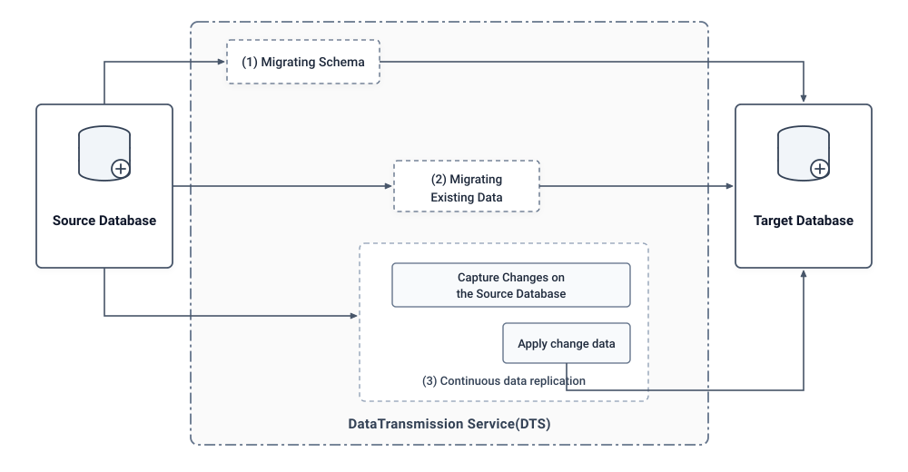
DTS Dual-Region Read/Write Traffic Routing
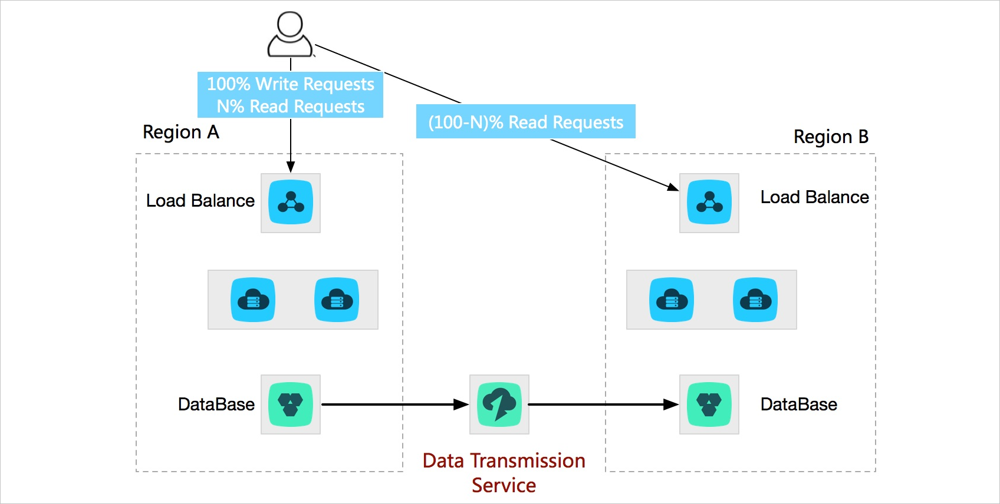
DTS Multi-Region Active Geo-Distribution
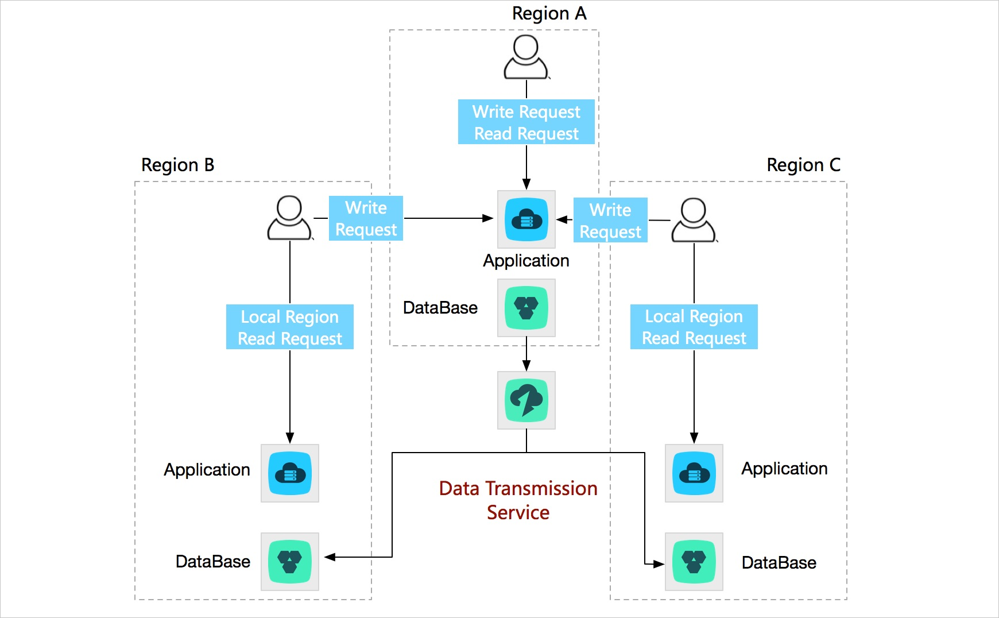
DTS Real-Time Analytics Synchronization
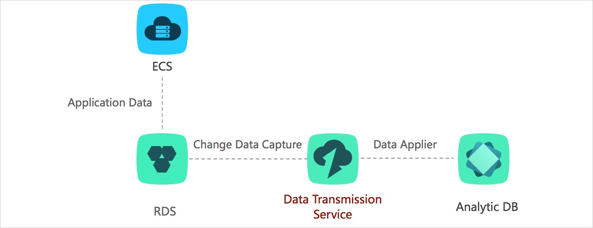
Zero-Downtime Migration Pipeline
Phase 1: Schema Migration
- Object Definition Transfer: Reads and migrates DDL definitions from the source database to the target RDS instance.
- Comprehensive Objects: Synchronizes tables, primary keys, foreign keys, indexes, views, triggers, and stored procedures.
- Pre-Migration Validation: Verifies syntax compatibility, character sets, and unsupported object types before proceeding.
- Execution Duration: Completes rapidly in seconds to minutes depending on database schema complexity.
Phase 2: Full Data Migration
- Historical Data Snapshot: Extracts and loads all existing row records from the source database into target RDS tables.
- High-Speed Parallel Chunks: Splits large tables into chunks using primary key ranges for high-speed multi-threaded ingestion.
- Online Source Operation: The source database remains completely online and continues serving production user transactions.
- Baseline Snapshot Point: Establishes a consistent baseline timestamp for incremental change capture.
Phase 3: Incremental Sync
- Real-Time Log Sniffing: Captures and parses continuous change logs (Binlog / WAL) generated during Phase 2 and ongoing operations.
- Sub-Second Replication: Replays transactions on the target RDS instance with sub-second replication latency.
- Zero-Downtime Cutover: Once replication lag reaches 0 seconds, pause writes on source and point application endpoints to RDS.
- Rollback Safeguard: Configure reverse DTS synchronization to allow safe fallback to source if unexpected issues occur post-cutover.
PolarDB
ApsaraDB for PolarDB is Alibaba Cloud's flagship cloud-native relational database service engineered with decoupled compute and distributed storage architecture.
Purpose-built for hyper-scale enterprise applications and high-concurrency transactional spikes, PolarDB separates compute nodes from shared distributed storage (PolarStore over RDMA). It delivers up to 6× the performance of standard MySQL, instant read scaling with up to 15 read-only replicas without data copying, and automated elastic storage expansion up to 500 TB.
🚀 Cloud-Native Decoupling
Decoupled compute and shared distributed storage pool (PolarStore) over ultra-low-latency 100 Gbps RDMA.
📈 Petabyte-Scale Storage (500 TB)
Elastic storage automatically scales up to 500 TB without sharding, disk provisioning waste, or table repartitioning.
👥 Sub-5-Min Read Scaling
Attach up to 15 Read-Only replicas in minutes sharing a single data copy with zero data duplication lag.
⚡ Serverless Auto-Scaling
Dynamic PCU auto-scaling with autonomous resource resizing and pay-per-second consumption flexibility.
🛡️ Active-Active HA & Paxos
Multi-AZ triplicate replication using Parallel Raft/Paxos protocol delivering RPO=0 and sub-30s failover.
PolarDB Architecture
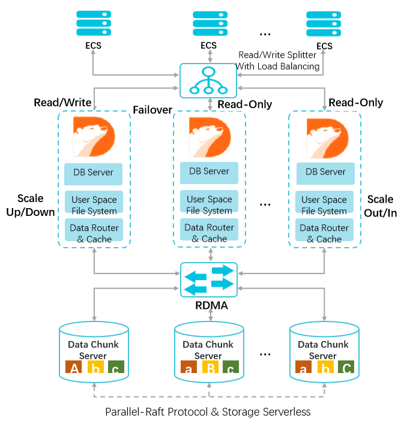
Decoupled Compute & PolarFS PolarFS
- Independent Scaling: DB Servers scale compute resources (CPU/RAM) independently from shared storage without data migration.
- Kernel Bypass: User Space File System (PolarFS) and RDMA eliminate OS kernel overhead, delivering microsecond I/O latency.
Read/Write Splitting & Fast Failover Proxy
- Intelligent Query Routing: Read/Write Splitter automatically directs write queries to the primary node and load-balances reads to replicas.
- Sub-30s Failover: Any read replica can be instantly promoted to primary with active failover and zero data loss (RPO=0).
Shared PolarStore Distributed Storage Parallel-Raft
- Zero-Copy Read Replicas: Up to 15 read nodes mount the same underlying storage chunks without duplicate storage costs or lag.
- Elastic Storage Pool: Automatically grows up to 500 TB with multi-chunk replication managed via Parallel-Raft consensus.
When to Choose RDS vs. PolarDB
When to Choose ApsaraDB for RDS
- Multi-Engine Heterogeneity: Best choice when requiring non-MySQL engines: native PostgreSQL, Microsoft SQL Server, or MariaDB.
- Standard Enterprise Storage Scale: Workloads with database storage requirements under 32 TB.
- Predictable Transaction Volume: Standard business operations, corporate ERPs, CRM systems, and moderate transactional throughput.
- Cost-Optimized Deployments: Cost-effective Basic edition for development/testing, and High-Availability dual-node editions for standard production.
When to Choose PolarDB Cloud-Native
- Massive Data Volumes (Up to 500 TB): Hyper-scale databases requiring elastic storage auto-scaling without sharding.
- Extreme Read Concurrency: Applications requiring up to 15 Read-Only replicas sharing a single distributed storage pool with zero replication lag.
- Rapid Replica Provisioning: Spin up new read replicas in under 5 minutes without copying terabytes of underlying data.
- Hyper-Scale E-Commerce & Flash Sales: Engineered for extreme peak write TPS, high-concurrency gaming, and massive transactional bursts.
RDS Pricing Architecture & Cost Dimensions
Billing Methods & Procurement Models
- Subscription (Prepaid): 1-month to 5-year commitments providing 30% to 50% cost savings over Pay-As-You-Go. Ideal for core, 24/7 business-critical production databases with predictable workloads.
- Pay-As-You-Go (Postpaid): Second-level / hourly billing with zero upfront commitment. Elastic resources can be scaled or released instantly; recommended for dev/test, dynamic environments, and temporary batch processing.
- RDS Serverless (RCU Dynamic Units): Compute capacity autoscales up and down based on actual traffic demand. Billed per RDS Capacity Unit (RCU) per second, scaling down to min-RCU or pausing during idle periods.
- Storage Capacity Units (SCU): Pre-purchased storage packages that automatically offset cloud disk storage consumption across RDS, PolarDB, and ECS instances.
Core Cost Vectors & Architecture Dimensions
- Compute Specification (vCPU & RAM): Governed by the database edition (Basic single-node, High-Availability dual-node, Enterprise triple-node) and hardware category (General-Purpose vs. Dedicated Host).
- Storage Tier & Capacity (GB/Month): Billed continuously per allocated GB. Options include Local SSD, Standard Cloud Disk, and ESSD (PL0–PL3 / AutoPL). Storage charges continue even when instance compute is stopped.
- Read Replicas & Database Proxy: Each provisioned Read-Only replica is billed as an independent compute instance. Dedicated DB Proxy nodes are billed based on allocated proxy capacity units.
- Backup Storage & Data Egress: Free backup quota included (typically 50%–200% of data disk size); excess snapshot storage billed per GB. Same-VPC data transfer is 100% FREE; public internet egress is billed per GB.
Practice Scenario 1: High-Concurrency Read Scaling & Failover
1. The platform processes an extreme volume of read queries (90% read / 10% write) that exceeds the compute capacity of a single primary database instance.
2. Application microservices must connect through a single unified database endpoint that automatically routes transactional writes to the primary and balances reads across replicas.
3. If a read replica experiences significant replication lag during peak write bursts, the routing tier must automatically isolate it to prevent serving stale inventory data.
Which database architecture fulfills all requirements?
- A Deploy RDS Basic Edition with local SSDs, and configure client-side application JDBC drivers with dual database connection pools.
- B Deploy RDS High-Availability Edition; attach multiple Read-Only replicas; enable the Dedicated Database Proxy with Read/Write Splitting, and configure a maximum replication latency threshold.
- C Deploy RDS Enterprise Edition with three nodes across availability zones, configuring application queries to connect directly to the secondary standby node private IP.
- D Deploy an independent ECS instance running self-managed Nginx reverse proxy with TCP stream load balancing mapped across RDS read replica IP addresses.
Scenario 1: Solution & Architectural Analysis
Practice Scenario 2: Financial Compliance, TDE & Multi-Zone Resiliency
1. Database files, redo logs, and all backup archives must be encrypted at rest using envelope encryption with customer-managed keys (CMK) that can be rotated.
2. The database must operate across multiple physical datacenters with automated failover in under 30 seconds and zero committed transaction data loss (RPO = 0).
3. In the event of an inadvertent bulk table deletion, operators must be able to restore the database to the exact second prior to the incident without disrupting ongoing production operations.
Which architecture fulfills this banking-grade mandate?
- A Deploy RDS Basic Edition with client-side application AES encryption, and schedule daily cron jobs executing mysqldump logical backups to ECS disks.
- B Deploy RDS High-Availability Edition in a Multi-AZ deployment; enable Transparent Data Encryption (TDE) integrated with KMS; configure continuous binlog archiving to OSS for Point-in-Time Recovery (PITR) to a clone instance.
- C Deploy an unmanaged MySQL database on ECS across two availability zones, configuring Linux LUKS full disk encryption on attached cloud disks.
- D Deploy RDS Basic Edition with an SSL-encrypted connection, relying exclusively on manual weekly snapshot backups.
Scenario 2: Solution & Architectural Analysis
Practice Scenario 3: Zero-Downtime Enterprise Database Migration
1. Production business operations must remain active throughout the multi-hour data transfer process without service interruption.
2. All schema definitions, tables, historical records, and ongoing transactional mutations must be fully synchronized.
3. Final cutover maintenance downtime must be restricted to under 10 minutes during the scheduled cutover window.
Which migration strategy accomplishes this objective?
- A Execute mysqldump on the on-premises database during business hours, transfer the SQL dump file over the internet, and import it into RDS using mysql CLI.
- B Stop the on-premises database service at midnight, take a physical cold backup using Percona XtraBackup, upload to OSS, and restore into a new RDS instance.
- C Configure Data Transmission Service (DTS) to execute Schema Migration, Full Data Migration, and Incremental Real-Time Synchronization; verify replication latency approaches 0s; switch application connection strings during the 10-minute cutover window.
- D Export database tables as CSV files, upload them to an OSS bucket, and run batch LOAD DATA INFILE commands directly against the RDS instance.
Scenario 3: Solution & Architectural Analysis
Module 06: ApsaraDB for RDS
Module 07: Auto Scaling Architecture